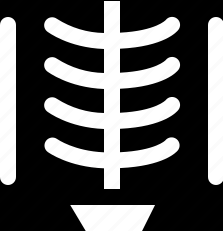
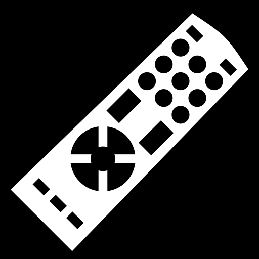
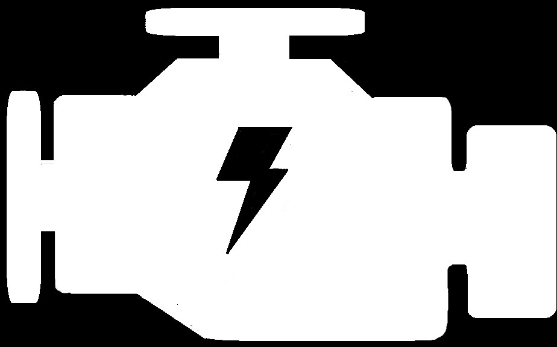

"I do not regret that others have stolen my ideas, rather than why they haven't their own."
CREDITS: BETTMANN ARCHIVE/GETTY IMAGES
An electric current that reverses its direction many times a second at regular intervals, typically used in power suppliers. It caused a stir at the 1893 World's Expo in Chicago, igniting the war of currents
Of course he didn't invent light itself, but he did invent how light can harnessed and distributed. Tesla developed and used fluorescent bulbs in his lab some 40 years before industry "invented" them
Electromagnetic and ionising radiation was heavily researched in the late 1800s, but Tesla researched the entire gamut. Tesla pioneered the use of X-rays for medical purposes, practically laying the foundations of radiology. He called it "Shadowgraphs"
Guglielmo Marconi was initially credited, and most believe him to be the inventor of radio to this day. However, the Court overturned Marconi's patent in 1943, when it was proven that Tesla invented the radio years previous to Marconi.
This invention was a natural outcropping of radio. Patent No. 613809 was the first remote controlled model boat, demonstrated in 1898 utilizing several large batteries and radio signals controlled switches
Tesla's invention of a motor with rotating magnetic fields could have freed mankind much sooner from the stranglehold of Big Oil. However, his invention in 1930 succumbed to the economic crisis and the world war that followed.
A Tesla coil is an electrical resonant transformer circuit. It is used to produce high-voltage, low-current, high-frequency alternating-current electricity. Tesla experimented with a number of different configurations consisting of two, or sometimes three, coupled resonant electric circuits.
Tesla built a tower that would use the natural frequencies of our universe to transmit data, including a wide range of information communicated through images, voice messages, and text.
Nikola Tesla
Inventor, Engineer
10th of July, 1856
Serbian-American inventor Nikola Tesla was born in July of 1856, in what is now Croatia. He came to the United States in 1884, and briefly worked with Thomas Edison before the two parted ways. He sold several patent rights, including those to his alternating-current machinery, to George Westinghouse. His 1891 invention, the "Tesla Coil", is still used in radio technology today. Tesla died in New York City on January 7, 1943.
Tesla came to the United States in 1884, and soon began working for the famed inventor and business mogul Thomas Edison. The two worked together for a brief period before parting ways due to a conflicting business-scientific relationship, attributed by historians to their different personalities. While Edison was a power figure who focused on marketing and financial success, Tesla was a commercially ou-of-tune and somewhat vulnerable, yet extremely pivotal inventor, who pioneered some of the history's most important inventions.
When Tesla came to the United States, he worked for Thomas Edison in Manhattan and was promised $50,000 if he could make Edison’s direct current method successful. As it turned out, Edison’s DC current was not as effective as Tesla’s own alternating current method in transmitting electricity over long distances. When Edison reneged on his offer to pay Tesla to solve his DC power design flaws, Tesla quit and moved on to his next endeavor. He applied for many patents for his AC power discoveries which were later sold to Westinghouse. AC power has been widely used since its discovery and still has some applications in radio and television transmission.